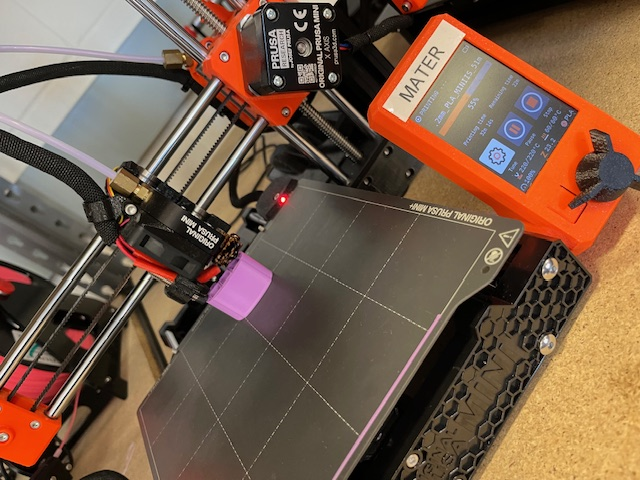
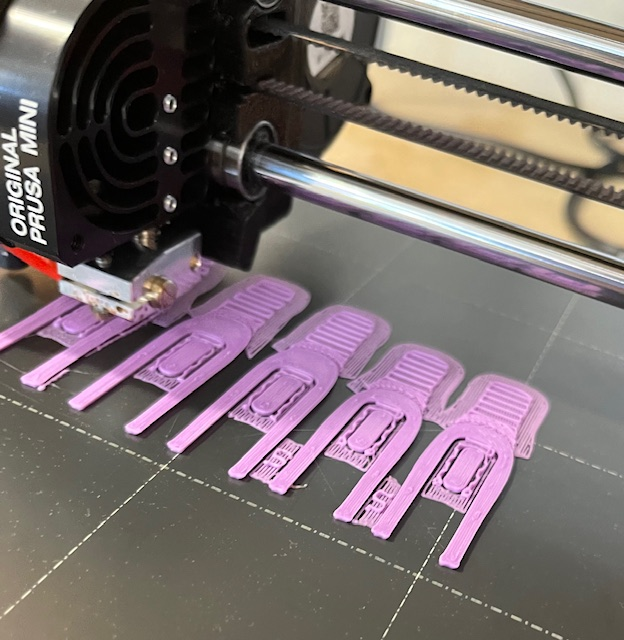
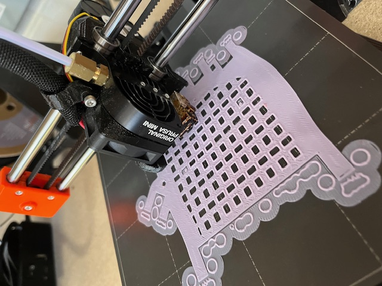
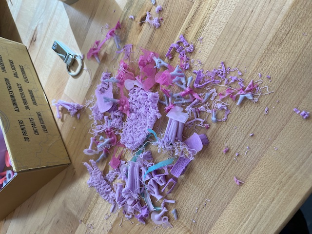
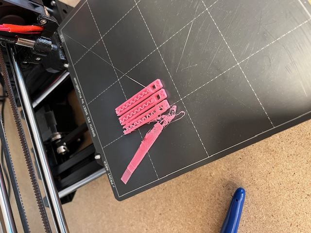
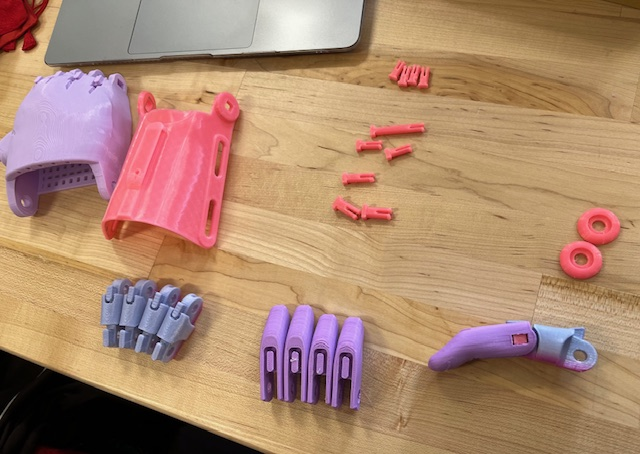
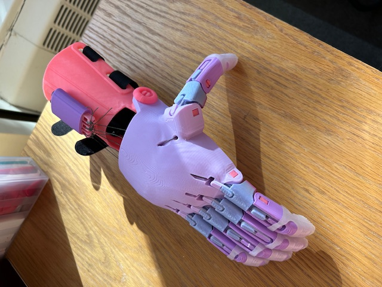
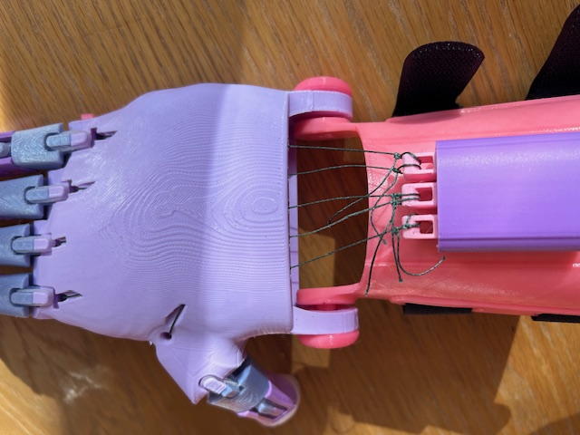
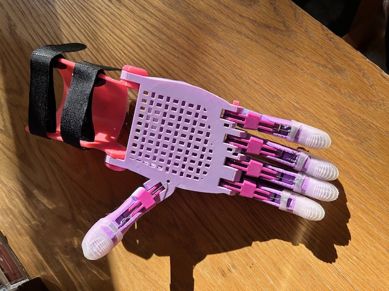

e-NABLE hand
Printing The Hand
Ruby and I decided to start printing the hand pieces before we opened the guides, reasoning that we would have a lot of time to read them while the pieces were printing. This perhaps worked against us because it took us some time to figure out which of the files we needed, and which were just extra, but it meant that we could begin printing our lengthy prints on multiple printers, and they were ready for us the next morning, which was great. Printing the pieces was fairly simple -- we chose filaments with colors that went well together, and supervised the printing to make sure it was going well. This worked in our favor because we were able to immediately notice that one of our prints had been bumped into, with the build plate being knocked to the side and causing the print to be misshapen. We quickly restarted the print and it went smoothly from there! We debated doing supports for some of the pieces, deciding to put them in for all those which needed. However, we did need to reprint the tensioner pins later on because the supports weren't coming out. This was a small print though, so it wasn't a huge detriment to our schedule.

Printing the hand

Various images of the printing/assembling process
Discussing and Reworking The Hand
Discussing and Reworking The Hand
During printing time, Ruby and I discussed the guides and videos we had found. We had not found any helpful videos, because the majority of the available ones on YouTube were promotion of the hand, not production. Those which were, were simply not helpful. We found two guides -- photo step by step production, which we referred to when building our own hand. They were helpful with all the 3d printed pieces, but we got a little confused when assembling everything else --- ie, the strings.
While this would be a simple and easy modification, something we've been discussing in class is building for a person, rather than a template. In that sense, I believe it is important to create e-NABLE hands for people with all types of hands -- smaller, wider, thicker, etc. I re-designed the palm of the hand to be larger, which would then be adapted for the person. Norman talks about this, about designing for individuals, and he also agrees that designing for a particular person is great because it allows them to have something fitted just for them. He also brings up the importance of standardized design, which I agree with is a good base. Therefore, we can have the standard design as well as custom for those who want one.

Building The Hand
Building The Hand
We began our assembly by lying out the pieces, before snapping all the finger pieces together. I found it really cool to see them all fit together! Unfortunately, that is where the majority of my assembling knowledge ends. Because of the holiday of Sukkot, I was not in Friday's class, and Ruby completed the majority of the assembly then. I'm extremely grateful to have such an understanding partner, and I really appreciate all the hard work she put into this project. We met up the next week to reprint the tensioner pins and finish assembly, attempting to find screws which fit the boxes. Without the screws, and the strings being pulled properly, our hand decided it wanted to give us the middle finger! (Yes, there is a picture). Once the screws were in and strings fashioned in place, our hand was complete.
 